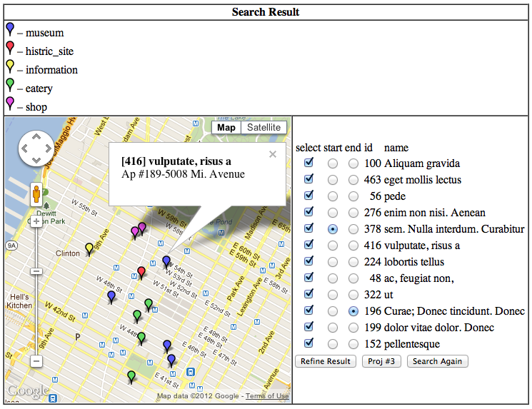

Introduction
to Database Systems
Bachelor's Program In Computer
Science at the City College of New York, Fall 2012
Update History:
Program Assignment #2
The second programming assignment is to (1) populate a data set into
MySQL back-end using a data generating capability prepared by the
previous assignment, (2) realize a simple web interface that enables
user to pull out the populated data based on several selection
conditions, and (3) present the found items on a road map as embedded
into a web browser. Study the application structure described below
and develop a required web interface using PHP and Javascript
references provided in this assignment.
This phase of course work will let you learn the core mechanism of
web-oriented database handling. It is by means of the so-called
PHP/MySQL's powerful scripting interface. Many e-commerce
and academic communities regard this level of work as today's de
facto standard of database programming. Start your work as early
as possible – feel free to ask me, in and out of class, for
project clarification, trouble resolution, and implementation hint,
but never share your implementation with classmate.
Data Generation
Generate a collection of 500 geopoints to populate your MySQL database
using the data generator extended by the previous assignment. This
data hypothesizes various points of interest spreading roughly over
the areas of Manhattan. Therefore, wisely adjust the distribution of
point locations. Each point consists of the following six attributes
whose values will be generated within the capabilities of data
generator:
- id: unique integral number utilized as a
primary key,
- lat: decimal number to express latitude with
precision at
least 6 fractional digits,
- lng: longitude with the numeric property as above,
- name: at most 20 character string,
- address: at most 30 character string,
- type: one of
{ museum, historic_site, information, shop, eatery
}.
Choose an appropriate data type and length for each attribute to
fulfill data import into a table. You may add more attribute(s) but no
more than 500 geopoints (tuples) in order not to waste the storage
space reserved at the CCNY's LAMP environment.
Data Presentation
Develop a browser interface that allows to filter out the points in
database and present the pruned items in a road map being generated
from a Google Maps capability. Specifically, the interface sought for
this assignment is to let the user to choose:
- a size of map in p × p pixels to be
generated in response to user input as one of
{ large:800×800, medium:600×600, small:400×400
};
- an initial zoom z of map as one of
{ large:6, medium:8, small:10 },
- a central address c in a text string, e.g.,
"Central Park,"
- a parameter m miles as one of
{ 0.5, 1, 1.5, 2, 2.5 }
to define a square boundary apart from c such as an area
surrounded by a half mile north/south and east/west from "Central
Park,"
- a disjunctive selection of type
such as points of either "museum" or "shop."
See Figure 3 for a sample web form gathering the above required
items. Map generation is almost identical to a sample explained in
Using
PHP/MySQL with Google Maps. Also,
Geocoding
Service exhibits a script that implements a conversion from
address to latitude and longitude geocoding. Adjusting these solutions
for this project implementation is just a matter of time!
|
|

|
| Figure 3: Sample input interface |
Figure 4: Sample refinement input |
The output of the service consists of:
- a road map generated by Google Maps API which should be sized
in p × p pixels, zoomed to z,
and centered at the geocoding of c,
- an embedment of geo-markers that correspond to all the points
meeting the conditions of m and type,
- a list of textual point descriptions, each selectable to construct
a subset for refinement, as well as marked for the start and end of a
tour,
- a map redrawn with geo-markers of non deselected and start/end
marked points of 3, in response to a refinement button
submission.
Regenerating map based on the above 3 and 4 items is the technical
heart of this assignment. See Figure 4 for a sample refinement input.
Assignment
The assignment is to generate a described set of data using your
extended data generator, populate the data into database, and activate
a required web interface for data presentation on your website. Use
Google
Maps API V3 (not deprecated V2). You need to deal with database
operation from this assignment. The last step of the assignment is to
migrate your product to the CCNY's Linux environment. Minimal
requirements are:
- Data:
- 500 hypothetical tuples having appropriate geo-decimal
latitude/longitude values covering Manhattan – 1 point.
- browser input for p, z, c, m,
and type selection.
- browser input for pruning of retrieved points and start/end tour points.
- Process:
- User can select options
for p, z, c, m,
and type selection to define the subsequent map generation
– 1 point.
- User can see a geo-coded point of c in the generated map
– 1 point.
- User can see all the points captured from generated database on
Google Map, marked with different colors depending on types
– 2 points.
- User can see a list of points in textual description
– 1 point.
- User can choose points in the textual list to select for further
refinement as well as start/end tour – 2 points.
- User can see those selected points, also indicated as start/end,
in the map regenerated – 2 point.
- System generate error message with incorrect input value
– 1 point.
- Product migration:
- User can run your product at the CCNY's Linux Labs – 1 points.
- Not required:
- Session management for user re-access to the interface.
- Extra capabilities like user registration and log-ins.
- Fancy figures.
- Extra credit:
- Adding an option to use circular distance (i.e., radius) from a
specified center – 1 point
You should be familiar with the intended systems work on various AMP
environments by now. The envisioned development is a small-scale web
programming with PHP, mostly adaptations of typical coding found
elsewhere, but this assignment cannot be finished in a few days. You
need at least one week of study of Google Maps, MySQL/PHP interface,
data generation, and web application development. Start earlier.
Grading Policy
Grading will be done according to each score
defined above. Your submission of this assignment will be counted
about 12% of your final grade. Your may need to demonstrate
your product in front of me if needed.
Submission
You are to hand in your development by Thursday 2:00 P.M. October
11th. See here for the submission
instructions. Note that I want only your PHP-related coding, not data
instance.
| © Akira Kawaguchi, September 2012. | CSc336 Introduction to Database
Systems |